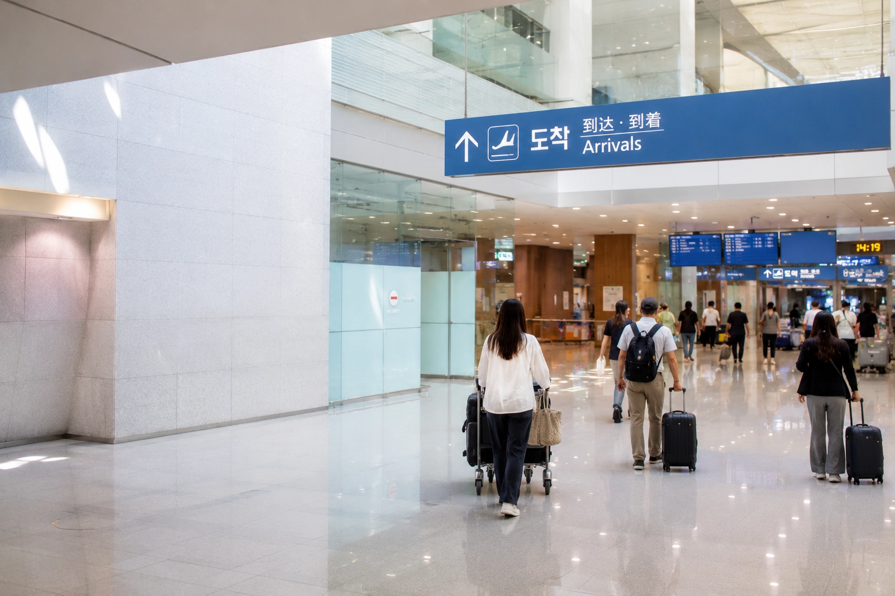
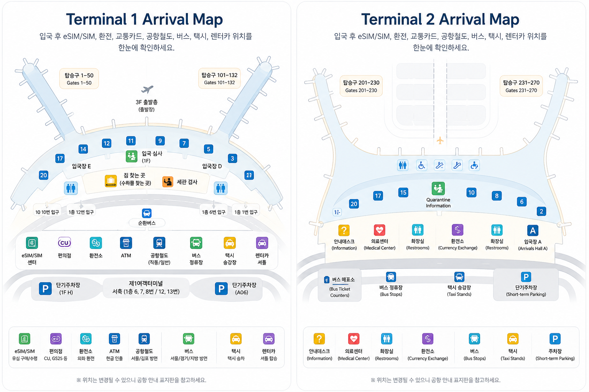

เข้าประเทศเกาหลี
ถ้านี่คือเที่ยวบินปลายทางและคุณกำลังเข้าประเทศเกาหลี ให้ตามป้าย Arrivals หรือ Immigration ลำดับทั่วไปคือ ตม. ก่อน จากนั้นรับกระเป๋า ผ่านศุลกากร แล้วจึงออกสู่โถงผู้โดยสารขาเข้าส่วนสาธารณะ
ตม. รับกระเป๋า ศุลกากร โถงผู้โดยสารขาเข้า
หลังลงเครื่องที่สนามบินอินชอน ขั้นตอนโดยรวมไม่ซับซ้อนถ้ารู้ว่าป้ายไหนสำคัญ หากกำลังเดินทางเข้าประเทศเกาหลี เส้นทางปกติคือ Arrivals → ตม. → รับกระเป๋า → ศุลกากร → โถงผู้โดยสารขาเข้าส่วนสาธารณะ
หากกำลังต่อเครื่องไปเที่ยวบินอื่น อย่าเดินตามลำดับนี้โดยอัตโนมัติ ให้ตามป้าย Transfer หรือ Connecting Flights และคำแนะนำสำหรับเที่ยวบินของคุณแทน

อาคารผู้โดยสารอาจเปลี่ยนได้ โดยเฉพาะเที่ยวบิน codeshare ข้อมูลใน e-ticket และการค้นหาเที่ยวบินขาเข้าสดของสนามบินเชื่อถือได้มากกว่ารายชื่อสายการบินที่บันทึกไว้ล่วงหน้า
ถ้านี่คือเที่ยวบินปลายทางและคุณกำลังเข้าประเทศเกาหลี ให้ตามป้าย Arrivals หรือ Immigration ลำดับทั่วไปคือ ตม. ก่อน จากนั้นรับกระเป๋า ผ่านศุลกากร แล้วจึงออกสู่โถงผู้โดยสารขาเข้าส่วนสาธารณะ
ตม. รับกระเป๋า ศุลกากร โถงผู้โดยสารขาเข้า
ถ้าคุณเพียงต่อเครื่องที่อินชอน ให้ตามป้าย Transfer หรือ Connecting Flights แทนการไปรวมกับเส้นทางผู้โดยสารขาเข้าโดยอัตโนมัติ ขั้นตอนต่อเครื่องอาจต่างกันตามสายการบิน อาคารผู้โดยสาร และว่ากระเป๋าโหลดถูกส่งต่อถึงเที่ยวบินถัดไปหรือไม่
หากไม่แน่ใจ ให้ใช้คำแนะนำการต่อเครื่องของสายการบิน แทนการสมมติว่าทุกการต่อเครื่องต้องผ่าน ตม. เกาหลี
สำหรับผู้โดยสารที่เข้าประเทศเกาหลี เส้นทางโดยรวมค่อนข้างตรง ระยะเดินอาจต่างกันตาม gate และ terminal แต่ลำดับขั้นตอนหลักเหมือนกัน
หลังลงจากเครื่อง ให้ตามป้าย Arrivals หรือ Immigration ป้าย Transfer และ Connecting Flights นำไปอีกขั้นตอนหนึ่ง ใช้ป้ายเหล่านั้นเฉพาะเมื่อคุณกำลังต่อเที่ยวบิน
เตรียมหนังสือเดินทางและเอกสารเข้าประเทศที่ใช้กับสถานะการเดินทางของคุณ กฎไม่ได้เหมือนกันทุกสัญชาติ วีซ่า หรือสถานะพำนัก ดังนั้นควรตรวจคำแนะนำทางการของเกาหลีก่อนเดินทาง แทนการลอก checklist ของนักท่องเที่ยวคนอื่น
มาตรการยกเว้น K-ETA ชั่วคราวสำหรับประเทศและภูมิภาคที่อยู่ในมาตรการเดิม ถูกขยายถึงวันที่ 31 ธันวาคม 2026 การได้รับยกเว้น K-ETA ไม่ได้หมายความโดยอัตโนมัติว่าจะได้รับยกเว้นการยื่นใบขาเข้า
ผู้เดินทางที่มี K-ETA ที่ยังใช้ได้จะได้รับยกเว้นการยื่นใบขาเข้า ส่วนผู้ที่ใช้มาตรการยกเว้น K-ETA ชั่วคราวอาจยังต้องยื่น e-Arrival Card ขึ้นอยู่กับสถานะของตน
e-Arrival Card ทางการไม่มีค่าธรรมเนียม และยื่นได้ภายใน 3 วันก่อนเดินทางถึงเกาหลี เว็บไซต์ทางการมี Navigator ให้ตรวจว่าคุณต้องยื่นหรือไม่
เว็บไซต์ e-Arrival Card ทางการไม่เรียกเก็บเงิน อย่าใส่ข้อมูลการชำระเงินในเว็บไซต์ที่อ้างว่าขายหรือรับทำบัตรขาเข้าเกาหลี
หลังผ่าน ตม. ให้ดูจอสนามบินว่ากระเป๋าของเที่ยวบินคุณออกที่สายพานไหน แล้วรับกระเป๋าโหลดก่อนเดินต่อไปยังศุลกากร
ถ้ากระเป๋าไม่ออกมา ให้เช็กก่อนว่าสายพานยังตรงกับเที่ยวบินของคุณ หากกระเป๋าหายหรือเสียหายจริง ให้ติดต่อสายการบินหรือเคาน์เตอร์บริการกระเป๋าขณะที่ยังอยู่ในพื้นที่รับกระเป๋า และเก็บแท็กกระเป๋าจากตอนเช็กอินกับข้อมูลเที่ยวบินไว้
หลังรับกระเป๋า ให้ตามป้ายศุลกากรไปยังทางออก
ถ้ามีของที่อาจต้องสำแดง ให้ตรวจข้อมูลของ Korea Customs แทนการใช้กฎของประเทศอื่น สินค้าที่เกินวงเงินยกเว้นภาษีหรือสินค้าควบคุมอาจต้องสำแดง
ถ้าไม่มีสิ่งของต้องสำแดง ให้ใช้ช่องศุลกากรที่สนามบินกำหนด
เมื่อผ่านศุลกากรและออกสู่โถงผู้โดยสารขาเข้าส่วนสาธารณะ ขั้นตอน ตม. และการเข้าประเทศส่วนหลักถือว่าเสร็จแล้ว
ก่อนเข้าเมือง คุณอาจยังต้องจัดการเน็ตมือถือ บันทึกรายละเอียดที่พักภาษาเกาหลี เช็กวิธีจ่ายเงินสำรอง หรือเลือกวิธีไปยังที่พัก เรื่องเหล่านี้แยกอธิบายในคู่มือโถงผู้โดยสารขาเข้าสนามบินอินชอน
ไม่จำเป็นต้องจำรายชื่อสายการบินตายตัวว่าอยู่ terminal ไหน ให้เช็ก terminal ของเที่ยวบินจริง แล้วใช้แผนที่เพื่อหาทิศทางหลังลงเครื่อง
Terminal 1 เป็นอาคารผู้โดยสารแยก มี ตม. พื้นที่รับกระเป๋า และโถงขาเข้าของตัวเอง ให้ตามป้ายของเที่ยวบินที่คุณมาถึงจริง แทนการใช้รายชื่อสายการบินที่บันทึกไว้
Terminal 2 มีพื้นที่ขาเข้าของตัวเองและไม่มีทางเดินสาธารณะที่เชื่อมกับ Terminal 1 หากต้องย้าย terminal หลังออกสู่พื้นที่สาธารณะ ให้ใช้คำแนะนำการเดินทางระหว่าง terminal ล่าสุดของสนามบิน
แผนที่ช่วยให้เห็นตำแหน่งโดยรวมของ ตม. จุดรับกระเป๋า ศุลกากร และโถงผู้โดยสารขาเข้าส่วนสาธารณะ สำหรับ gate สายพาน หรือสิ่งอำนวยความสะดวกแบบสด ให้ใช้ป้ายและข้อมูลเที่ยวบินปัจจุบันของสนามบิน

เมื่อออกสู่โถงผู้โดยสารขาเข้าส่วนสาธารณะ ขั้นตอนเข้าประเทศก็อยู่ข้างหลัง สิ่งที่ต้องทำต่อขึ้นอยู่กับทริป เช่น ต่ออินเทอร์เน็ต บันทึกที่อยู่ที่พักภาษาเกาหลี เตรียมวิธีจ่ายเงินสำรอง และเลือกเส้นทางที่ยังใช้งานได้จริงกับกระเป๋า
สำหรับขั้นตอนใช้งานจริงช่วงแรก ให้ไปต่อที่คู่มือโถงผู้โดยสารขาเข้าสนามบินอินชอน
ถ้าคำถามเดียวที่เหลือคือจะไปถึงที่พักอย่างไร คู่มือ Airport Transfer จะเปรียบเทียบ AREX รถบัสสนามบิน แท็กซี่ และรถรับส่งที่จองไว้จากเส้นทางทั้งหมดแบบประตูถึงประตู
เช็ก e-ticket หรือค้นหาหมายเลขเที่ยวบินในหน้าขาเข้าอย่างเป็นทางการของสนามบินอินชอน วิธีนี้ปลอดภัยกว่าการยึดรายชื่อสายการบินตายตัว โดยเฉพาะเที่ยวบิน codeshare
ใช่ หากคุณกำลังเข้าประเทศเกาหลี ลำดับทั่วไปคือ ตม. → รับกระเป๋า → ศุลกากร → โถงผู้โดยสารขาเข้าส่วนสาธารณะ ผู้โดยสารที่กำลังต่อเครื่องควรตามป้าย Transfer หรือ Connecting Flights และคำแนะนำของสายการบินแทน
เช็กก่อนว่าสายพานยังตรงกับเที่ยวบินของคุณ หากกระเป๋าหายหรือเสียหาย ให้ติดต่อสายการบินหรือเคาน์เตอร์บริการกระเป๋าก่อนออกจากพื้นที่รับกระเป๋า และเตรียมแท็กกระเป๋ากับข้อมูลเที่ยวบินไว้
ไม่ได้ Terminal 1 และ Terminal 2 เป็นคนละอาคารและไม่มีทางเดินสาธารณะเชื่อมกัน หากต้องย้าย terminal ในพื้นที่สาธารณะ ให้ใช้คำแนะนำการเดินทางระหว่าง terminal ของสนามบิน
ค่อยตัดสินใจหลังออกถึงโถงผู้โดยสารขาเข้าส่วนสาธารณะ ตัวเลือกที่เหมาะขึ้นอยู่กับที่พักจริง เวลามาถึง กระเป๋า และจำนวนคน คู่มือ Airport Transfer แยกเปรียบเทียบ AREX รถบัสสนามบิน แท็กซี่ และรถรับส่งที่จองไว้จากการเดินทางทั้งหมดจนถึงที่พัก
ตามป้าย Transfer หรือ Connecting Flights และคำแนะนำของสายการบิน ตรวจ terminal สำหรับเที่ยวบินต่อ เวลาเชื่อมต่อที่มี และว่ากระเป๋าโหลดถูกส่งต่อไปเที่ยวบินถัดไปหรือไม่ แทนการสมมติว่าต้องเดินตามเส้นทาง ตม. ทั่วไป
กฎการเข้าประเทศและการดำเนินงานของสนามบินอาจเปลี่ยนได้ ใช้แหล่งข้อมูลทางการเหล่านี้เมื่อรายละเอียดมีผลกับทริปของคุณ